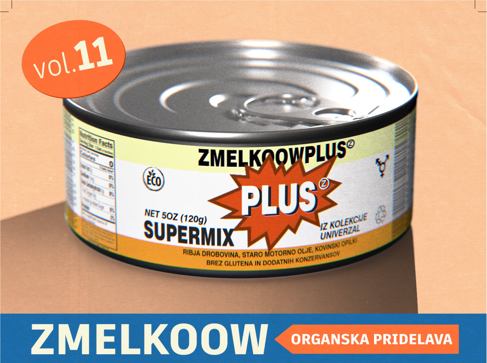

NOVO!

Zmelkoov Plus
Organska pridelava.
Brez glutena in dodatnih konzervansov.
KNJIGICA
YOUTUBE
Vsebina konzerve
Knjigica (PDF)
Cel zaslon
Nazaj
Vaš brskalnik ne podpira predogleda PDF datotek. <a href="knjigica_zmelkoow_plus.pdf" class="text-blue-500 underline">Prenesite PDF tukaj.</a>
Strogo Tajna Statistika
Nazaj
Skupaj prenosov (od začetka)
0
Prenosi (zadnjih 10 dni)
0
Kumulativni graf prenosov
Prenosi po komadih
Komad
Število prenosov
Dostop omejen!
Prosim, vnesite strogo tajno geslo za dostop do statistike.
Odkleni
Prekliči
Napačno geslo! Zmelkoow te gleda.